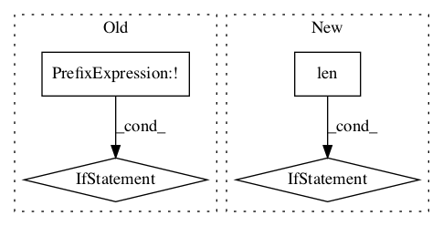

1c75176947730de8322acf6ad996096625e92e3a,tensorflow_lattice/python/rtl_layer.py,RTL,call,#RTL#Any#,217
Before Change
input_tensors = []
for input_key in sorted(x.keys()):
items = x[input_key]
if not isinstance(items, list):
items = [items]
for tensor in items:
dim = tensor.shape.as_list()[1]
if dim == 1:
input_tensors.append(tensor)After Change
input_tensors.extend(items)
else:
input_tensors.append(items)
if len(input_tensors) == 1:
flattened_input = input_tensors[0]
else:
flattened_input = tf.concat(input_tensors, axis=1)
// outputs_for_monotonicity[0] are non-monotonic outputs
// outputs_for_monotonicity[1] are monotonic outputs
outputs_for_monotonicity = [[], []]
for monotonicities, inputs_for_units in self._rtl_structure:
if len(inputs_for_units) == 1:
inputs_for_units = inputs_for_units[0]In pattern: SUPERPATTERN
Frequency: 3
Non-data size: 4
Instances Project Name: tensorflow/lattice
Commit Name: 1c75176947730de8322acf6ad996096625e92e3a
Time:
Author: null
File Name: tensorflow_lattice/python/rtl_layer.py
Class Name: RTL
Method Name: call
Project Name: pymanopt/pymanopt
Commit Name: 77d86929ba8c3fd29d70742764298e434b297298
Time:
Author: null
File Name: pymanopt/autodiff/backends/_tensorflow.py
Class Name: _TensorFlowBackend
Method Name: compile_function
Project Name: tensorpack/tensorpack
Commit Name: 999846b2763b60f70df53f5844ef07857cf5f5aa
Time:
Author: null
File Name: examples/FasterRCNN/data.py
Class Name: TrainingDataPreprocessor
Method Name: __call__